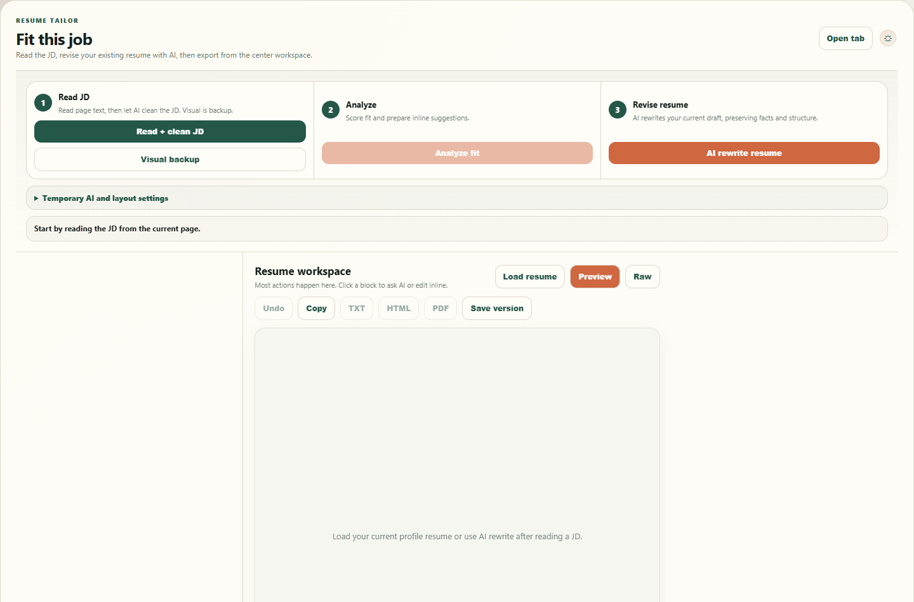
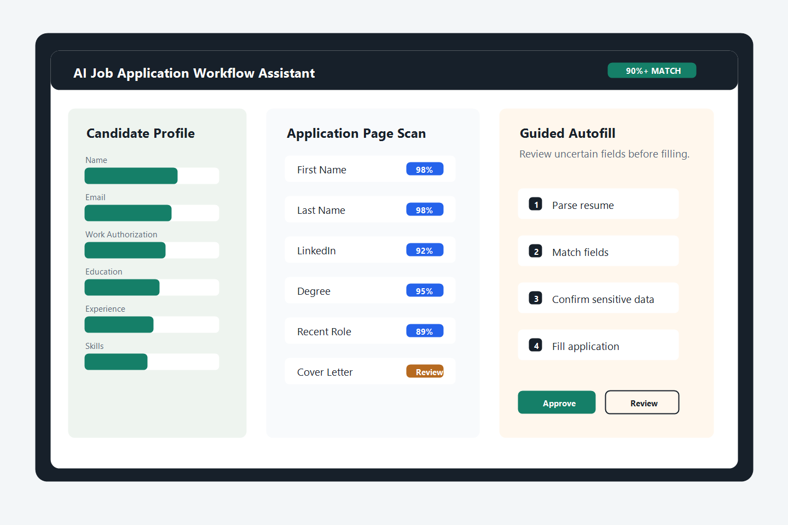

AI Workflow Automation
AI-Native Job Application Automation Platform
A Chrome-based workflow assistant that converts unstructured resumes into structured candidate profiles and helps users complete repetitive job applications faster, with review and confirmation controls.


Problem
Job applications are repetitive and inconsistent. Candidates often re-enter the same information across platforms that use different fields, labels, and formats.
What I Built
I designed and developed a workflow automation platform that parses resumes into reusable candidate profiles and supports guided autofill across application pages.
Key Features
- Resume parsing into structured candidate profiles
- Reusable profile export/import
- Rule-based and AI-assisted field matching
- Guided autofill with user confirmation